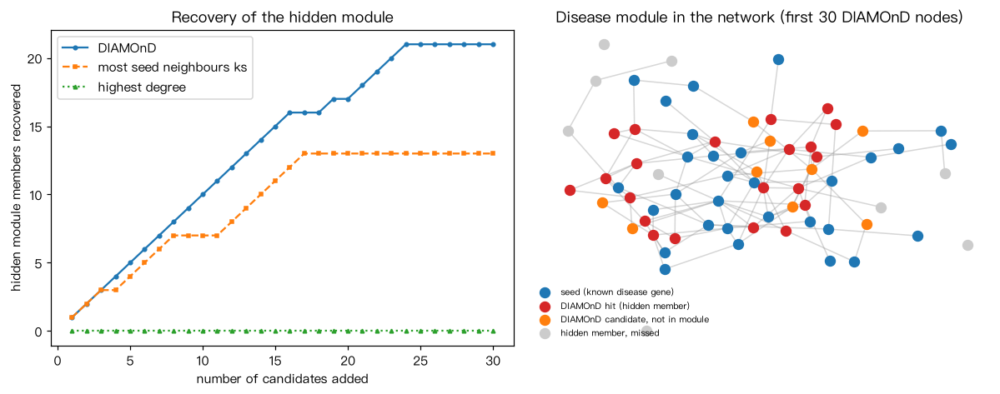

Example04 / 07
DIAMOnD 疾病模块扩展（连接显著性 + 逐步加入）
DIAMOnD（Ghiassian 等 2015）：对每个候选节点，计算“在 N 个节点、s0 个种子的网络中，一个度为 k 的节点 至少有 ks 个种子邻居”的超几何尾概率 p，每步把 p 最小的节点并入种子集合，然后重新计算。 这里在合成网络中埋入一个 60 个节点的“真实疾病模块”，只公开其中 30 个作为已知疾病基因（种子）， 看 DIAMOnD 前 30 个加入的节点中能找回多少个隐藏的模块成员，并与两个朴素基线比较： “种子邻居数 ks 最多”与“节点度最大”。输出解读：连接显著性同时考虑 ks 与 k， 不会像 ks 排序那样偏爱枢纽，也不会像度排序那样与模块无关。
Output输出图

Output文字输出
DIAMOnD 前10/20/30 个候选中隐藏模块成员数：[10, 17, 21]（共 30 个隐藏成员） 种子邻居数 ks 前10/20/30 个候选中隐藏模块成员数：[7, 13, 13]（共 30 个隐藏成员） 度 前10/20/30 个候选中隐藏模块成员数：[0, 0, 0]（共 30 个隐藏成员） DIAMOnD 前 30 个候选的平均度： 7.5 ；ks 排序前 30 个的平均度： 16.0
Code代码
# DIAMOnD（Ghiassian 等 2015）：对每个候选节点，计算“在 N 个节点、s0 个种子的网络中，一个度为 k 的节点
# 至少有 ks 个种子邻居”的超几何尾概率 p，每步把 p 最小的节点并入种子集合，然后重新计算。
# 这里在合成网络中埋入一个 60 个节点的“真实疾病模块”，只公开其中 30 个作为已知疾病基因（种子），
# 看 DIAMOnD 前 30 个加入的节点中能找回多少个隐藏的模块成员，并与两个朴素基线比较：
# “种子邻居数 ks 最多”与“节点度最大”。输出解读：连接显著性同时考虑 ks 与 k，
# 不会像 ks 排序那样偏爱枢纽，也不会像度排序那样与模块无关。
import networkx as nx
import numpy as np
from scipy.stats import hypergeom
def planted_module_network(n=2000, m=2, size=60, seed=7):
"""BA 网络 + 在一个随机节点集合内额外加边，形成一个比背景更紧密、但不是孤立团的模块。"""
rng = np.random.default_rng(seed)
G = nx.barabasi_albert_graph(n, m, seed=seed)
module = rng.choice([v for v in G if G.degree(v) <= 6], size=size, replace=False).tolist()
for _ in range(90): # 模块内加 90 条边（平均每个成员多约 3 条）
u, v = rng.choice(module, size=2, replace=False)
G.add_edge(int(u), int(v))
known = sorted(rng.choice(module, size=size // 2, replace=False).tolist())
hidden = sorted(set(module) - set(known))
return G, known, hidden
def diamond(G, seeds, n_add, alpha=1):
"""返回按加入顺序排列的 n_add 个节点。alpha>1 时把每个种子计作 alpha 份（原文的种子加权）。"""
N = G.number_of_nodes()
S = set(seeds)
added = []
for _ in range(n_add):
s0 = len(seeds) * alpha + (len(S) - len(seeds)) # 加权后的种子数
Nw = N + (alpha - 1) * len(seeds)
cand = {v for u in S for v in G[u]} - S
best, best_p = None, 2.0
for v in sorted(cand):
ks_orig = sum(1 for u in G[v] if u in seeds)
ks = alpha * ks_orig + sum(1 for u in G[v] if u in S and u not in seeds)
k = G.degree(v) + (alpha - 1) * ks_orig
p = hypergeom.sf(ks - 1, Nw, s0, k) # P(X >= ks)
if p < best_p:
best, best_p = v, p
S.add(best); added.append(best)
return added
G, known, hidden = planted_module_network()
n_add = 30
d_order = diamond(G, set(known), n_add)
cand = {v for u in known for v in G[u]} - set(known)
ks_order = sorted(cand, key=lambda v: (-sum(1 for u in G[v] if u in known), v))[:n_add]
deg_order = sorted(set(G) - set(known), key=lambda v: (-G.degree(v), v))[:n_add]
H = set(hidden)
for name, order in [("DIAMOnD", d_order), ("种子邻居数 ks", ks_order), ("度", deg_order)]:
hits = [sum(1 for v in order[:k] if v in H) for k in (10, 20, 30)]
print(f"{name:10s} 前10/20/30 个候选中隐藏模块成员数：{hits}（共 {len(H)} 个隐藏成员）")
print("DIAMOnD 前 30 个候选的平均度：", np.mean([G.degree(v) for v in d_order]).round(1),
"；ks 排序前 30 个的平均度：", np.mean([G.degree(v) for v in ks_order]).round(1))
import matplotlib.pyplot as plt
fig, ax = plt.subplots(1, 2, figsize=(11, 4.4))
for order, lab, st in [(d_order, "DIAMOnD", "o-"), (ks_order, "most seed neighbours ks", "s--"), (deg_order, "highest degree", "^:")]:
ax[0].plot(range(1, n_add + 1), np.cumsum([v in H for v in order]), st, ms=3, label=lab)
ax[0].set_xlabel("number of candidates added"); ax[0].set_ylabel("hidden module members recovered")
ax[0].set_title("Recovery of the hidden module"); ax[0].legend()
nodes = set(known) | H | set(d_order) # 种子、隐藏成员与 DIAMOnD 候选的诱导子图
Gs = G.subgraph(nodes); pos = nx.spring_layout(Gs, seed=1, k=0.35)
groups = [(known, "C0", "seed (known disease gene)"), ([v for v in d_order if v in H], "C3", "DIAMOnD hit (hidden member)"),
([v for v in d_order if v not in H], "C1", "DIAMOnD candidate, not in module"),
([v for v in H if v not in d_order], "0.8", "hidden member, missed")]
nx.draw_networkx_edges(Gs, pos, ax=ax[1], edge_color="0.6", alpha=0.4)
for vs, c, lab in groups:
nx.draw_networkx_nodes(Gs, pos, nodelist=vs, node_color=c, node_size=60, ax=ax[1], label=lab)
ax[1].set_title("Disease module in the network (first 30 DIAMOnD nodes)"); ax[1].axis("off")
ax[1].legend(fontsize=7, loc="lower left", frameon=False)
plt.tight_layout(); plt.show()Run在浏览器中运行
首次加载 Python 环境约需 20–40 秒；可以修改参数后重新运行。